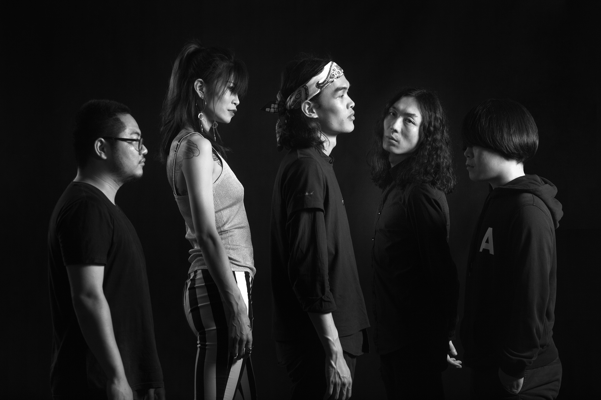

All About Mercader
Mercader is a post-punk and indie rock band which is built by the main singer Zhao Tai. In the year of 2008, Zhao and his friend decide to create a expirimental band called "Zhao's Cubic". But the recording was unsuccessful at that time so the band fell apart. But Zhao still hold the dream and passionate of making music. In the year of 2015, he finally formed his new band Mercader and get the Best Album Awards of the year.
The music of Mercader is "super realistic that nearly become ugly and phycho, but it is also the purest music ever." Zhao struggled for so many years clinging to his "Mercader Dream". He's thought over all these years became deep and lonely. Just like "Mercader" came from the name of a Soviet agent who hunt down the betrayers, Zhao's lyric and spirit is a Soviet herorism tragedy which is always lonely, full of self-denial and self-analysis. Just like the lyric of his song Mercader - "The tragedy of Mercader is going to start, who will fall into his trap this time? The overseer of the puppet is watching calmly, I'm just a clown passing by."
Me and Mercader
The first Mercader song I've ever listen is called "Death or Fallen". The song is raging and hard-core but the lyric is very philosophical at the same time. I'd say the combination makes it the coolest song I've ever listened to!
The first Mercader live I've ever been to is in the year of 2018 in Beijing. I was totally astonished about how strongly the band can influnce people. It is hardcore and shocking. Everyone in the room is hopping and shooking their heads with the music and everyone is sweating. It is truely the best live I've ever been to!

My favorite song from Mercader is called "Enchanted", I'm gonna attach the music vedio below!
This is the Music Video of Mercader - "Enchanted"